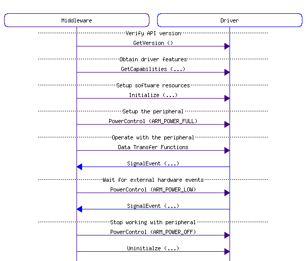
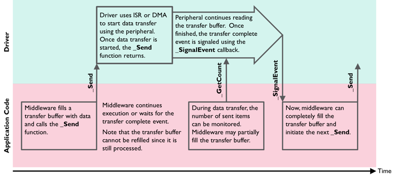

A CMSIS-Driver publishes a Access Struct with the data type name ARM_DRIVER_xxxx that gives to access the driver functions.
Example: Function Access of the SPI driver
typedef struct _ARM_DRIVER_SPI {
int32_t (*Uninitialize) (void);
int32_t (*Send) (const void *data, uint32_t num);
int32_t (*Receive) ( void *data, uint32_t num);
int32_t (*Transfer) (const void *data_out, void *data_in, uint32_t num);
uint32_t (*GetDataCount) (void);
int32_t (*Control) (uint32_t control, uint32_t arg);
Driver Instances
A device may offer several peripherals of the same type. For such devices, the CMSIS-Driver publishes multiple instances of the Access Struct. The name of each driver instance reflects the names of the peripheral available in the device.
Example: Access Struct for 3 SPIs in a microcontroller device.
Driver Configuration
For a device family, the drivers may be configurable. The reference implementations store configuration options in a central file with the name RTE_Device.h. However, the configuration of the drivers itself is not part of the CMSIS-Driver specification.
Driver Functions
Each CMSIS-Driver contains these functions:
- GetVersion: can be called at any time to obtain version information of the driver interface.
- GetCapabilities: can be called at any time to obtain capabilities of the driver interface.
- Initialize: must be called first. Initializes the software resources used by the interface (clear variables, allocate memory, create CMSIS-RTOS objects, ...). Initialize may also register a SignalEvent callback function. Initialize leaves the peripheral in powered-off state.
- SignalEvent: is an optional callback function registered by Initialize that is used to indicate hardware events or the completion of data block transfer operations.
- PowerControl: Controls the power profile of the peripheral and may be called after Initialize. Typically three power options are available:
- ARM_POWER_FULL: Peripheral is turned on and fully operational. The driver may initialize at that point the peripheral registers.
- ARM_POWER_LOW: (optional) Peripheral is in low power mode and partially operational; usually it can detect external events and wake-up.
- ARM_POWER_OFF: Peripheral is turned off and not operational (it will also stop any pending operations). This is also the state of the peripheral after device reset.
- Uninitialize: Complementary function to Initialize. It will free all software resources used by the interface (de-allocate memory, release CMSIS-RTOS objects, ...).
- Control: Several drivers provide a control function to configure communication parameters or execute miscellaneous control functions.
Additional functions are specific to each driver interface and described in the individual sections of each driver.
Generic Function Call Sequence
The driver API functions GetVersion, GetCapabilities, Initialize, PowerControl, Uninitialize are called in the following order:

Data Transfer Functions
A CMSIS-Driver implements data transfer functions to a peripheral that are non-blocking. This means that the driver configures the read or write access to the peripheral and instantly returns to the calling application. The function names for data transfer end with:
- Send to write data to a peripheral.
- Receive to read data from a peripheral.
- Transfer to indicate combined read/write operations to a peripheral.
During a data transfer the application can query the number of transferred data items using functions named GetxxxCount. On completion of a data transfer the driver calls a callback function with a specific event code.
While the data exchange with the peripheral occurs, the application can therefore decide to:
- Wait (using a RTOS scheduler) for the callback completion event. The RTOS is controlled by the application code which makes the driver itself RTOS independent.
- Use polling functions that return the number of transferred data items to show progress information or partly read or fill data transfer buffers.
- Prepare another data transfer buffer for the next data transfer.
The following diagram shows the basic communication flow when using the _Send function in an application.

Non-blocking Send Function